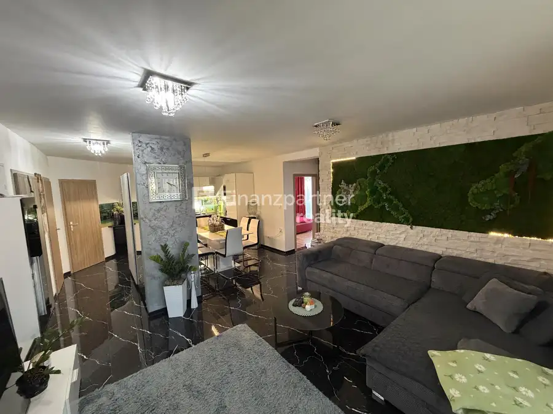
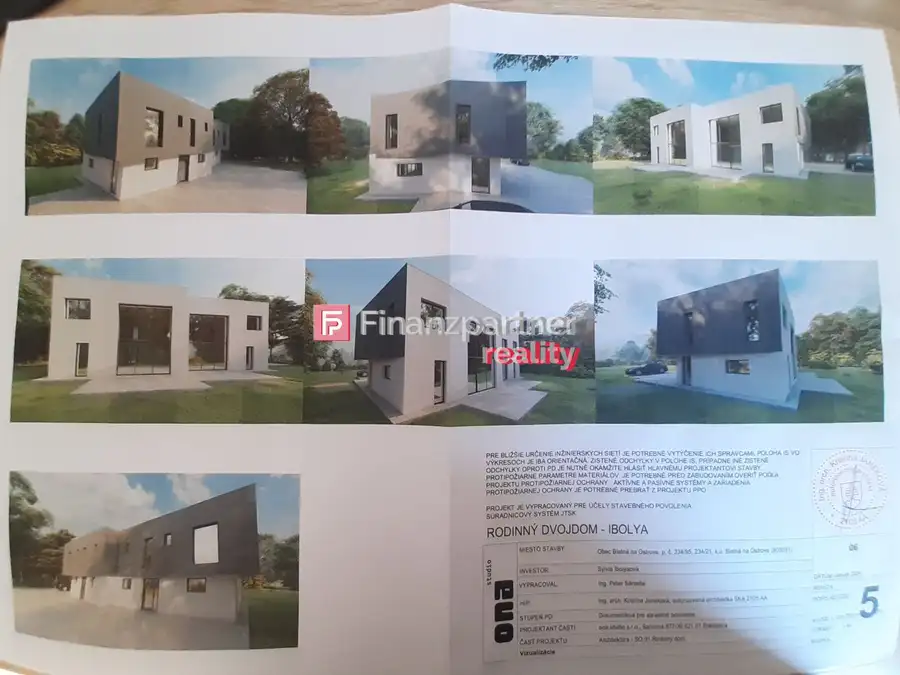
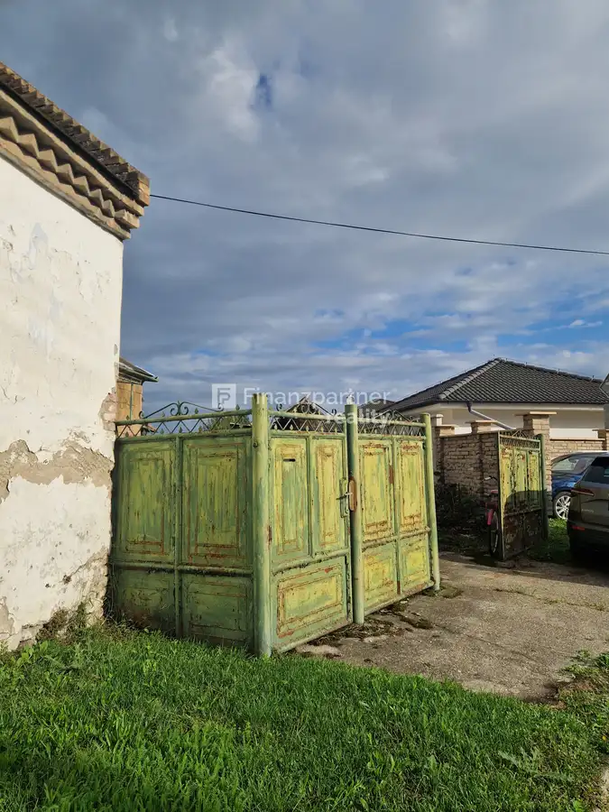

(F138-014REM) Stavebné pozemky Lehnice
Lehnice
- VlastníctvoFiremné
O nehnuteľnosti
Stavebné pozemky v Lehniciach – ideálne miesto pre váš nový domov!Hľadáte pokojné miesto na stavbu rodinného domu?Finanzpartner reality Vám ponúka na predaj stavebné pozemky rôznych veľkostí v obci Lehnice. Pozemky sa nachádzajú v tichej a vyhľadávanej lokalite, ideálnej pre rodinné bývanie.Prečo si vybrať práve naše pozemky?Výborná lokalita: Pozemky sa nachádzajú v tichej a pokojnej časti obce, zároveň s dobrou dostupnosťou do centra a k hlavným cestným komunikáciám.Rôzne veľkosti: Ponúkame pozemky rôznych výmer, aby si každý našiel ten svoj ideálny. Veľkosť pozemkov je od 560 m2 až do 1600m2. Aktuálne vypočítaná cena v inzeráte je na 600m2.Možnosť okamžitej výstavby: Pozemky sú pripravené na výstavbu, takže môžete začať stavať svoj vysnívaný dom ihneď.Atraktívna cena: Ponúkame konkurencieschopné ceny.Čo vám ponúkame:Rovinaté pozemky: Väčšina pozemkov je rovinatých, čo uľahčuje výstavbu.Slnečné pozemky: Pozemky sú orientované tak, aby váš budúci dom mal dostatok slnečného svetla.Možnosť výberu: Môžete si vybrať pozemok, ktorý spĺňa vaše individuálne požiadavky.Lokalita:Obec Lehnice ponúka kompletnú občiansku vybavenosť, školy, škôlky, obchody, reštaurácie a výborné dopravné spojenie do okolitých miest.V prípade potreby pomôžem s vybavením hypotekárneho, spotrebného ako aj stavebného úveru. Zabezpečím potrebné zmluvy, znalecké posudky a iné podklady.Pri vážnom záujme dohoda možná!Ak vás táto ponuka oslovila, alebo máte nejaké otázky, neváhajte ma kontaktovať, rada si to s Vami osobne prídem pozrieť!Cena 105 000 €Naše ceny sú vrátane provízie za kompletný servis a sú schválené majiteľom.Telefón: 0908 797 740E-mail:renata.markuszekova@finanzpartner.sk
Parametre
| Druh | Pozemok pre bytovú výstavbu |
|---|---|
| Dátum zverejnenia | 3. 9. 2025 |
| Plocha pozemku | 0 m² |
| Typ | Predaj |
| Vlastníctvo | Firemné |
Kde to je


Mohlo by Vás zaujímať

BytNové10 295 000 €F173-113REMAE , 3izbový byt záhradou Dolný Štál Dolný Štál 3-izbový VIDEO PREZENTÁCIAOdkaz TU: youtube.com/watch?v=4jsmGTSn2-A Jedinečné bývanie s atmosférou rodinného domu, kde sa spája luxus, súkromie a mimoriadne…
PozemokNové6 143 000 €ZNÍŽENA CENA!!!Pozemok na stavebné účely v obci Blatná na Ostrove (F102-014REMaE) Blatná na Ostrove 1680 m² Na predaj: Stavebný pozemok na dvojdom v Blatnej na Ostrove – s povolením a plánom!Hľadáte ideálne miesto na výstavbu vášho nového…
DomNové10 55 000 €Znížená cena!!(F155-12-REMAE) 3 izbový rodinný dom Kľúčovec Kľúčovec Finanzpartner reality exkluzívne ponúka na predaj: Rodinný dom s obrovským potenciálom v obci Kľúčovec blízkosti (pri Veľkom Mederi a Győri)!Hľadáte…